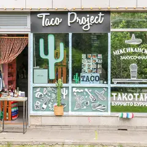

Подборку собрали 20 октября, прошедшие события скрыты. Свежая афиша — на главной
Подборка для компании · данные на 15 октября
Куда пойти с друзьями в Москве
154 плана для компании: бани, бары и раковарни, боулинг, тиры, караоке и компьютерные клубы. Ниже — ещё 149 мест, куда удобно идти большой компанией, и 60 событий на ближайшие две недели. Отметь пару вариантов и кинь ссылку в общий чат: каждый выберет, куда и в какие дни может.
- 154 плана
- 149 мест
- 60 событий
Планы для компании 24 из 154
- Ростокинский акведук · Акведук XVIII века · м. ВДНХ
- 12 минут пешкомИнкубо · Квест с актёрами
В сумерках пройти вдоль каменного Ростокинского акведука 1780-х, а потом хоррор в «Инкубо» — «Пожиратель душ» или неоновая «Ночь в Токио» с сильными актёрами.
Открыть план: Акведук в сумерках и хоррор-квестПозвать сюда: Акведук в сумерках и хоррор-квест
Фото: Dmitry Ivanov., CC BY-SA 4.0 · Wikimedia Commons
- Краснопресненские бани · Баня и хамам · м. Улица 1905 года
- 13 минут пешкомРаковарня · Раки и караоке
Финская сауна, хамам и бассейн в Краснопресненских банях, а потом через Трёхгорку в «Раковарню» — раки, морепродукты и караоке до шести утра.
Открыть план: Баня на Пресне и ракиПозвать сюда: Баня на Пресне и раки
Фото: Ludvig14, CC BY-SA 4.0 · Wikimedia Commons
- Mega Ice в «Авиапарке» · Крытый каток · м. ЦСКА
- 1 минута пешкомLali · Узбекский ресторан
- 19 минут пешкомТрели · Караоке с кабинками
Покататься на крытом катке «Авиапарка», поужинать в Lali там же, а потом закрыться в своей кабинке караоке «Трели» у «Аэропорта» — поют до 6 утра.
Открыть план: Лёд, плов и своя караоке-кабинкаПозвать сюда: Лёд, плов и своя караоке-кабинка
Фото: A.Savin, Free Art License · Wikimedia Commons
- Парк 850-летия Москвы · Парк · м. Марьино
- 6 минут пешкомЧеддер · Пивной ресторан
Пройтись по набережной Парка 850-летия Москвы, а потом в «Чеддер»: пиво и сидр в фирменных бокалах, бургеры и трансляции — бармены расскажут про каждый сорт.
Открыть план: Набережная в Марьине и сидрПозвать сюда: Набережная в Марьине и сидр
Фото: Brateevsky, CC BY-SA 3.0 · Wikimedia Commons
- Sky Padel · Падел · м. Выставочная
- 4 минуты пешкомBamboo.Bar · Ресторан с террасой
Корт на четверых под стеклянным куполом «Афимолла» — играешь в окружении башен Сити, а потом ужин на террасе Bamboo.Bar прямо в квартале.
Открыть план: Падел среди небоскрёбовПозвать сюда: Падел среди небоскрёбов
Фото: BpbAlonka, CC BY-SA 3.0 · Wikimedia Commons
- Парк «Северное Тушино» · Парк · м. Планерная
- 2 минуты пешкомЛазертаг Арена «Военный бункер» · Лазертаг
Подводная лодка-музей и экраноплан в парке «Северное Тушино», а рядом — круглосуточный лазертаг в декорациях военного бункера, час игры — 1 100 ₽.
Открыть план: Подлодка и лазертаг в бункереПозвать сюда: Подлодка и лазертаг в бункере
Фото: Mardiver, CC0 · Wikimedia Commons
- Le Mans · Картинг · м. Шелепиха
- 8 минут пешкомСмотровая iCITY · Бесплатная смотровая и коворкинг
- 10 минут пешкомRUSKI · Ресторан на 85-м этаже
Десятиминутный заезд по 650-метровой трассе Le Mans у «Шелепихи», потом бесплатная смотровая iCITY и ужин на 85-м этаже башни «ОКО» в RUSKI.
Открыть план: После работы: картинг и 85-й этажПозвать сюда: После работы: картинг и 85-й этаж
Фото: mos.ru, CC BY 4.0 · Wikimedia Commons
- Пятницкая улица · Улица · м. Новокузнецкая
- 5 минут пешкомЕвгенич · Караоке-рюмочная
Пройтись по вечерней Пятницкой мимо купеческих домов, а потом в рюмочную «Евгенич» в духе 80-х: караоке с ведущим, хоровое пение и настойки до 6 утра.
Открыть план: Пятницкая и народное караокеПозвать сюда: Пятницкая и народное караоке
Фото: Retired electrician, CC0 · Wikimedia Commons
- Селезнёвские бани · Баня · м. Новослободская
- 16 минут пешкомДепо · Фудмолл
Хорошо пропариться в Селезнёвских, а потом в Депо: 75 кафе, каждый берёт своё.
Открыть план: Баня и фудмоллПозвать сюда: Баня и фудмолл
Фото: Александр Спиридонов, CC BY 3.0 · Wikimedia Commons
- Хлебозавод №9 · Креативный квартал · м. Дмитровская
- 6 минут пешкомФлакон · Дизайн-завод
Два креативных квартала рядом: еда, бары и маркеты, можно переходить из одного в другой.
Открыть план: Бары Хлебозавода и ФлаконаПозвать сюда: Бары Хлебозавода и Флакона
Фото: Bezik, CC BY-SA 4.0 · Wikimedia Commons
- Останкинская башня · Смотровая площадка · м. Бутырская
- 21 минута пешкомДом-музей Королёва · Музей
- 9 минут пешкомМузей космонавтики · Музей
Город с 337 метров со стеклянным полом (возьмите паспорт), потом минут двадцать прогулкой до дома, где жил конструктор Сергей Королёв, а оттуда меньше десяти минут до Музея космонавтики с настоящими спускаемыми аппаратами.
Открыть план: Башня и космосПозвать сюда: Башня и космос
Фото: Klodklodklod77, CC BY-SA 4.0 · Wikimedia Commons
- Парк Горького · Парк · м. Октябрьская
- 11 минут пешкомSUBSTANCE · Бильярд-бистро
Прогулка по набережной и пара партий в бильярд-бистро SUBSTANCE.
Открыть план: Бильярд в Парке ГорькогоПозвать сюда: Бильярд в Парке Горького
Фото: A.Savin, Free Art License · Wikimedia Commons
- Бородинская панорама · Музей · м. Парк Победы
- 2 минуты пешкомAtlantica Seafood · Рыбный ресторан
Сначала круговое полотно Рубо о Бородинском сражении, а потом устрицы и рыба в Atlantica в двух минутах пешком. Учтите: по пятницам панорама закрыта.
Открыть план: Бородино и морепродуктыПозвать сюда: Бородино и морепродукты
Фото: Alex 'Florstein' Fedorov, CC BY-SA 4.0 · Wikimedia Commons
- Бункер-42 · Музей и ресторан под землёй · м. Таганская
- 9 минут пешкомRestaurant by Deep Fried Friends · Ресторан-бар
Экскурсия в секретный бункер холодной войны на глубине 65 метров, а потом бистро и коктейльный паб в Deep Fried Friends в девяти минутах пешком.
Открыть план: Бункер холодной войныПозвать сюда: Бункер холодной войны
Фото: Fastboy, CC BY-SA 3.0 · Wikimedia Commons
- Сад им. Баумана · Сад · м. Красные Ворота
- 12 минут пешкомUrban Winery · Городская винодельня
Сад Баумана и городская винодельня, где вино делают прямо здесь.
Открыть план: Вино с производстваПозвать сюда: Вино с производства
Фото: Tsitsurskaya, CC BY-SA 4.0 · Wikimedia Commons
- Палеонтологический музей · Музей · м. Тёплый Стан
- 11 минут пешкомColizeum Тёплый Стан · Компьютерный клуб
Скелеты динозавров в Палеонтологическом музее, а через 11 минут пешком компы Colizeum у самого выхода из «Тёплого Стана».
Открыть план: Динозавры и катка в Тёплом СтанеПозвать сюда: Динозавры и катка в Тёплом Стане
Фото: MikSed, CC BY-SA 4.0 · Wikimedia Commons
- Культурный центр ЗИЛ · Культурный центр · м. Автозаводская
- 8 минут пешкомАвлабар · Грузинский ресторан
Конструктивистский дворец культуры ЗИЛ и хинкали в «Авлабаре» у Автозаводской.
Открыть план: ДК ЗИЛ и ГрузияПозвать сюда: ДК ЗИЛ и Грузия
Фото: NVO, CC BY-SA 3.0 · Wikimedia Commons
- Парк «Зарядье» · Парк · м. Китай-город
- 9 минут пешкомBrasserie Lambic · Пивной ресторан
Прогулка по Парящему мосту, потом мидии и двести сортов пива в брассери за десять минут.
Открыть план: Зарядье и бельгийское пивоПозвать сюда: Зарядье и бельгийское пиво
Фото: Alina Vozna, CC BY-SA 4.0 · Wikimedia Commons
- Измайловский парк · Парк · м. Партизанская
- 12 минут пешкомИзмайловский кремль · Культурный комплекс
Большой круг по осеннему лесопарку с прудами, потом деревянный кремль: музеи, мастер-классы и блошиный «Вернисаж» рядом.
Открыть план: Измайлово на весь деньПозвать сюда: Измайлово на весь день
Фото: d.wine, CC BY-SA 2.5 · Wikimedia Commons
- Воробьёвы горы · Парк и смотровая · м. Воробьёвы горы
- 8 минут пешкомКанатная дорога · Канатная дорога
Пешком по жёлтым склонам Воробьёвых гор, потом кабинка над рекой в Лужники.
Открыть план: Канатка над осенним лесомПозвать сюда: Канатка над осенним лесом
Фото: Niklitov, CC BY-SA 4.0 · Wikimedia Commons

- ROKU · Компьютерный клуб · м. Новослободская
- 3 минуты пешкомTaco Project · Мексиканское кафе
Пара часов в премиальном кибер-лаундже у Новослободской с топовым железом и VIP-комнатами, а через три минуты тако с открытой кухни в Taco Project.
Открыть план: Катка в ROKU и такоПозвать сюда: Катка в ROKU и тако
Фото: Stolbovsky, CC BY-SA 3.0 · Wikimedia Commons
- WINSTRIKE Arena · Компьютерный клуб · киберарена · м. Лубянка
- 1 минута пешкомСмотровая ЦДМ · Смотровая площадка
Пара часов на киберарене, потом лифт на бесплатную смотровую на крыше того же здания — Кремль как на ладони.
Открыть план: Катка и крыша Детского мираПозвать сюда: Катка и крыша Детского мира
Фото: A.Savin, CC BY-SA 3.0 · Wikimedia Commons
- Rizz Cyber & Lounge · Компьютерный клуб · м. Смоленская
- 2 минуты пешкомАрбат · Пешеходная улица
Катка в переулках у Смоленской, а потом проветрить голову на Старом Арбате — две минуты пешком.
Открыть план: Кибер-лаундж и ночной АрбатПозвать сюда: Кибер-лаундж и ночной Арбат
Фото: Alex 'Florstein' Fedorov, CC BY-SA 4.0 · Wikimedia Commons
- WINSTRIKE Arena · Компьютерный клуб · киберарена · м. Лубянка
- 1 минута пешкомAnvio VR · VR-арена
WINSTRIKE Arena и Anvio VR — в одном здании на Лубянке: сначала катка за ПК, потом рубилово в шлемах.
Открыть план: Киберарена и VR в одном домеПозвать сюда: Киберарена и VR в одном доме
Фото: A.Savin, CC BY-SA 3.0 · Wikimedia Commons


Места для большой компании 24 из 149
Новорязанская ул., 23, стр. 1
60 корнеров в бывшем троллейбусном депо и большая крыша-терраса. До 23, в пт–сб до 00.
Подробнее и маршрут: Три вокзала. ДепоПозвать сюда: Три вокзала. Депо
Фото: Svetlov Artem, CC BY 4.0 · Wikimedia Commons
Рочдельская ул., 15, стр. 30
Раки, морепродукты и караоке до шести утра на Трёхгорке.
Подробнее и маршрут: РаковарняПозвать сюда: Раковарня
Фото: Ludvig14, CC BY-SA 4.0 · Wikimedia Commons
ул. Пресненский Вал, 6, стр. 1
Новое
Паб со своим пивом и отдельным концертным залом у «Улицы 1905 года». Живые концерты, работает до 6 утра — проверенный вариант для вечера с друзьями.
Подробнее и маршрут: 16 ТоннПозвать сюда: 16 Тонн
Фото: Gennady Grachev from Moscow, Russia, CC BY 2.0 · Wikimedia Commons
Вятская ул., 41А
15 столов русского бильярда в здании Мельникова, ресторан и VIP-зоны. 12–00.
Подробнее и маршрут: Дом русского бильярда «Москва»Позвать сюда: Дом русского бильярда «Москва»
Фото: Yartsew, CC BY-SA 4.0 · Wikimedia Commons
Театральный пр., 5/1 (ЦДМ, 5 этаж)
Командные VR-игры: перестрелки, зомби, квесты в виртуальной реальности.
Подробнее и маршрут: Anvio VRПозвать сюда: Anvio VR
Фото: A.Savin, CC BY-SA 3.0 · Wikimedia Commons
Неглинная ул., 14, стр. 4
Легендарные бани в центре: парная, бассейн и дворцовые интерьеры.
Подробнее и маршрут: Сандуновские баниПозвать сюда: Сандуновские бани
Фото: Vladimir OKC, общественное достояние · Wikimedia Commons
Селезнёвская ул., 15
Классические бани с мужскими и женским отделениями, от 1 600 ₽ за час. Понедельник — санитарный день.
Подробнее и маршрут: Селезнёвские баниПозвать сюда: Селезнёвские бани
Фото: Александр Спиридонов, CC BY 3.0 · Wikimedia Commons
просп. Будённого, 33
Новое
Бани с 1939 года, известные очень жарким паром: хаммам с мыльным массажем, соляная пещера, мужское и женское отделения, VIP-кабинеты для компании.
Подробнее и маршрут: Бани «Соколиная Гора»Позвать сюда: Бани «Соколиная Гора»
просп. Мира, 119, стр. 66А
Новое
Павильон ВДНХ, где собраны кухни регионов России: можно попробовать карельский суп с форелью и калитки. Места много — удобно пообедать после прогулки по выставке.
Подробнее и маршрут: Дом российской кухниПозвать сюда: Дом российской кухни
Чистопрудный бул., 10, стр. 1
Одна из старейших сетей квестов в Москве. Комнату и время выбирайте на сайте — есть с актёрами и без.
Подробнее и маршрут: КлаустрофобияПозвать сюда: Клаустрофобия
Зеленодольская ул., 30, корп. 3
Новое
Большой боулинг у «Кузьминок»: 16 дорожек, бильярд и караоке, вкусная кухня. Дорожка — 1 380–3 180 ₽/ч, в пятницу и субботу открыто до 5 утра. Бронируйте заранее.
Подробнее и маршрут: Сокровища ФараонаПозвать сюда: Сокровища Фараона
Сиреневый бул., 23А
Новое
Кальянная с караоке на Сиреневом бульваре у Щёлковской: русские и зарубежные хиты, VIP-комната, летом терраса. В пт–сб до 6 утра, в остальные дни до 5.
Подробнее и маршрут: Gallery LoungeПозвать сюда: Gallery Lounge
Шарикоподшипниковская ул., 13, стр. 89
Самый большой крытый картинг Москвы: трасса 500 м, VR-арена и ресторан внутри.
ул. Ленинская Слобода, 26
Новое
Фудхолл в корпусе бывшего завода «Динамо»: уличная еда со всего света, от дагестанских хинкалов до баббл-ти. Удобно большой компанией — каждый берёт своё.
ул. Крымский Вал, 9, стр. 5
Бильярд-бистро в Парке Горького: завтраки с утра и партии вечером.
Большой Трёхсвятительский пер., 2/1, стр. 8
Четыре стола для пула и один для русского, бар. От 1 250 ₽ в час, 17:00–1:00.
Астраханский пер., 5, стр. 3
Новое
Баня старой школы у «Проспекта Мира»: русская парная и купель — 1 600 ₽ за 2 часа, для компании до 6 человек есть отдельные номера. Пн — санитарный день.
Подробнее и маршрут: Астраханские баниПозвать сюда: Астраханские бани
ул. Маросейка, 15
Новое
Караоке-клуб в подвальчике на Маросейке у Китай-города: общий зал, VIP-комната и пакет для девичника. Работает до 5–6 утра.
Подробнее и маршрут: Белая стрекозаПозвать сюда: Белая стрекоза
Большая Косинская ул., 45
Яхт-клуб на Белом озере: прогулочная зона, разноцветные домики и атмосфера курортного городка на востоке Москвы.
Подробнее и маршрут: Белое озеро в КосинеПозвать сюда: Белое озеро в Косине
Кубанская ул., 10/107
Новое
Старое поместье и учтивый дворецкий, который оказывается не так прост. Нелинейный перформанс с актёрами: правильного выбора нет, всё решаете вы.
Ленинградский просп., 15, стр. 1
Новое
Ресторан в краснокирпичном корпусе бывшей фабрики «Большевик»: в зале Black Loft идут сольники известных комиков и «Большой девчачий стендап». Билеты от 1000 ₽.
Подробнее и маршрут: Большевик ЛофтПозвать сюда: Большевик Лофт
Варшавское ш., 34
Новое
Большие бани с 1938 года у «Нагатинской»: высший разряд с бассейном и джакузи, женский разряд и «Бани мира» — залы «Шале», «Тунис» и др. на 6–13 гостей.
Подробнее и маршрут: Варшавские баниПозвать сюда: Варшавские бани
Украинский бул., 15
Гастропаб Александра Раппопорта у Киевского вокзала: пиво и ностальгическая еда.
Подробнее и маршрут: Гастропаб «Бибирево»Позвать сюда: Гастропаб «Бибирево»
д. Николо-Хованское, 230
Новое
Бани-бочки в Новой Москве: «Прованс» на 2–4 гостей — 8 000 ₽ за 2 часа, «Хуторянка» до 8 человек, горячий чан с травами на дровах и гриль-домик.
Подробнее и маршрут: Деревенские баниПозвать сюда: Деревенские бани


Куда сходить компанией в ближайшие две недели 8 из 60
Стендап клуб на Трубной, Большой зал · м. Трубная · 950–1 500 ₽ · 18+
Фирменный вечер клуба: опытные комики с обкатанным материалом. Показы почти каждый день, по пятницам и субботам — в 19:00 и 21:00.
Подробнее: Биг стендапПозвать сюда: Биг стендапБилеты : Биг стендап (страница с билетами, откроется в новой вкладке)
Иммерсивный театр «Морфеус» · м. Павелецкая · 3 900–4 900 ₽ · 16+
Иммерсивная комедия с закрытыми глазами: семь зрителей попадают в Москву 1903 года с театральными интригами и кафе. Полтора часа, несколько сеансов в день.
Подробнее: Поезд, Чехов, два орлаПозвать сюда: Поезд, Чехов, два орлаБилеты : Поезд, Чехов, два орла (страница с билетами, откроется в новой вкладке)
Медиацентр парка «Зарядье» · м. Китай-город · 12+
Выставка памяти одного из первых цифровых художников России: стереопанели, видеоарт и реконструкция мастерской. Логично совместить с прогулкой по Зарядью.
Подробнее: Мастерская новатора. Константин ХудяковПозвать сюда: Мастерская новатора. Константин ХудяковБилеты : Мастерская новатора. Константин Худяков (страница с билетами, откроется в новой вкладке)
Фото: Alina Vozna, CC BY-SA 4.0 · Wikimedia Commons
Театр Российской армии, Большая сцена · м. Достоевская · 5 000–44 000 ₽ · 6+
Юбилейная серия сольных концертов: знаменитые песни, новые вещи и разговор с залом о жизни. Вечеров много — до 8 ноября, можно выбрать удобный.
Подробнее: Александр РозенбаумПозвать сюда: Александр РозенбаумБилеты : Александр Розенбаум (страница с билетами, откроется в новой вкладке)
Театр Табакова на сцене «Современника» · м. Чистые пруды · 3 000–35 000 ₽ · 16+
Пьеса Александра Галича об отце и сыне, главную роль играет Владимир Машков. Полтора часа сильной драмы; билеты разбирают заранее, 21 октября уже аншлаг.
Подробнее: Матросская ТишинаПозвать сюда: Матросская ТишинаБилеты : Матросская Тишина (страница с билетами, откроется в новой вкладке)
ГМИИ им. А. С. Пушкина, Галерея искусства стран Европы и Америки · м. Кропоткинская
Кубинские киноафиши и плакаты 1950–70-х — больше 140 листов дерзкой графики. Зайдёт и тем, кто к музеям обычно равнодушен. По понедельникам закрыто.
Подробнее: Кубинский плакат. 1950–1970-е. Кино и революцияПозвать сюда: Кубинский плакат. 1950–1970-е. Кино и революцияБилеты : Кубинский плакат. 1950–1970-е. Кино и революция (страница с билетами, откроется в новой вкладке)
Фото: Ghirlandajo, CC BY-SA 3.0 · Wikimedia Commons
Мегаспорт · м. ЦСКА · 1 460–7 450 ₽ · 0+
Хоккейное дерби в середине недели: «Спартак» против ЦСКА на «Мегаспорте». Трибуны шумят с первой минуты — отличный вечер для фанатской компании.
Подробнее: Спартак — ЦСКА (хоккей, КХЛ)Позвать сюда: Спартак — ЦСКА (хоккей, КХЛ)Билеты : Спартак — ЦСКА (хоккей, КХЛ) (страница с билетами, откроется в новой вкладке)
STILL, Большой зал · м. Чистые пруды · от 2 500 ₽ · 18+
Формат без ведущего: на сцену по очереди выходят пять хедлайнеров, и лайнап каждый раз другой. Сеансы в 16:00, 19:00 или 21:30 — смотри по дате.
Подробнее: 5 хедлайнеров за 2500₽Позвать сюда: 5 хедлайнеров за 2500₽Билеты : 5 хедлайнеров за 2500₽ (страница с билетами, откроется в новой вкладке)

Как позвать
- Выбери план, место или событие — в карточке адрес, цены и маршрут в Яндекс Картах.
- Нажми «Позвать сюда» — соберётся приглашение-игра для свидания или голосование для компании.
- Отправь ссылку в любой мессенджер: тебе ответят, а компания отметит, куда и когда может. Бесплатно и без регистрации.